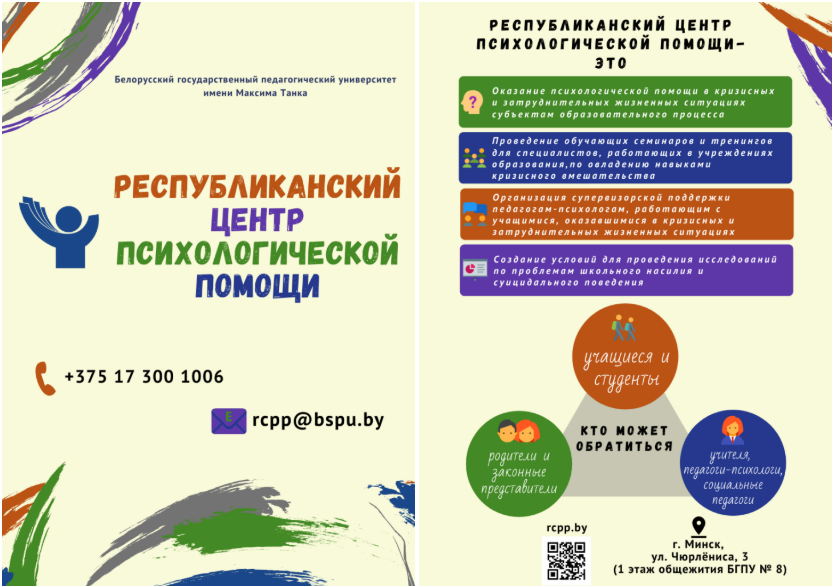

Колонка психолога

КАК ВЕРНУТЬ ИНТЕРЕС К ЖИЗНИ
У каждого из нас в жизни происходят такие ситуации, когда необходимо обратиться за помощью и поддержкой к другому человеку. В последнее время все чаще и чаще мы обращаемся за этим не к родственникам и друзьям, а к людям, которые выбрали делом своей жизни помощь другим – к психологам.
Допустим, решение обратиться за поддержкой к психологу уже так или иначе принято. Тем не менее, у Вас закономерным образом могут оставаться сомнения и вопросы в духе: «Как, в принципе, посторонний человек, едва знакомый с моей жизненной ситуацией, поможет мне справиться с моими трудностями?».
Поэтому хочется отметить, что самое главное, что происходит при обращении к психологу – это диалог, поиск ответов на свои наболевшие вопросы, разговор, общение… Все то, что направлено на облегчение состояния клиента.
Одним из таких наболевших вопросов у современного человека являются появления периодов в жизни, когда к ней теряется всякий интерес. Люди начинают вспоминать моменты, когда интерес был к любым событиям, они к чему-то стремились, чего-то добивались, радовались каждой мелочи и каждый вечер, ложась спать, мечтали, чтобы быстрее наступил новый день.
На самом деле понять, почему теряется интерес к жизни, просто. Люди начинают закрываться от окружающего мира, не хотят видеть и слышать все происходящее. Подобным образом человек проявляет защитную реакцию, которая помогает скрыться от боли, сумасшедшего темпа реальной жизни, событий, которые неподвластны его понятиям и т.д.
Каждый из нас может вспомнить, насколько часто он произносит такие фразы: я не желаю это видеть, я не хочу это слышать, у меня нет желания еще раз пережить подобное. Во время произношения таких фраз мы запускаем определенные механизмы: программу на разрушение, полностью закрываем какие-либо чувства, действительный мир во всех его проявлениях нами больше не воспринимается и т.д.
Так как же вернуть интерес к жизни? Психологи советуют, что просто нужно научиться правильно воспринимать окружающий мир.
Измените свое расписание. Это может быть изменение маршрута, по которому Вы следуете на работу. Возможно, стоит отказаться от того транспорта, которым следуете или выйти намного раньше своей остановки и далее идти пешком. Многим помогает прослушивание любимой музыки во время поездки на работу.
- Начните экспериментировать и не бойтесь нового в своей жизни.
- Перестаньте употреблять одну и ту же пищу.
- Поменяйте прическу, если она долгое время не менялась.
- Обновите гардероб. Нужно получать удовольствие от всяческих новшеств.
- Обновите интерьер у себя в доме. Расхламитесь. Добавьте в интерьер новых красок.
А еще потребуется стать немного эгоистичным и избавиться от тех обязанностей, которые были привычны и отбирали большое количество времени, но не являлись необходимость. Нужно начать любить себя и перестать кого-то слушать, научиться верить в себя, радоваться маленьким положительным событиям в своей жизни.
Психологи в один голос утверждают, что человеку для того, чтобы вернуть интерес к жизни, нужно быть полностью довольным собой и всем тем, что он делает.
Конечно, сложно представить человека, который будет удовлетворен всем происходящим, при этом сам будет неуспешным. Многие считают, что успех – это деньги. Но все намного проще, успешный человек – это тот, который реализует и любит свой вид деятельности, свою работу. Успех не заключается в том, чтобы иметь дорогой дом, машину, яхту. Все это просто мелочи по сравнению с тем, когда человек смог реализовать себя. Успешный человек всегда с большой радостью возвращается домой и рад встрече с близкими ему людьми, радуется тому, что все родные здоровы и живы, есть, кому рассказать о прошедшем дне…
Есть известная истина: правильно поставленный вопрос несет в себе ответ. Человек, задающийся вопросом, как вернуть интерес к жизни, избавиться от депрессии и почувствовать себя счастливым, уже находится на правильном пути!
Если Вам нужно разобраться в себе, найти собственные ресурсы для выхода из сложившейся трудной, на Ваш взгляд, ситуации, найти свою цель в жизни, обрести внутренне спокойствие, а то и просто выговориться, обращайтесь в учреждение «Территориальный центр социального обслуживания населения Мозырского района» (г. Мозырь, пл. Горького, 7) или позвоните по телефону «Доверие» (22-52-38) и Вас обязательно выслушают, окажут необходимую помощь и эмоциональную поддержку!
Любая мелкая проблема может стать спусковым механизмом, той каплей, которая переполнит чашу терпения и приведет к необратимым последствиям.
Все мы, независимо от возраста, пола, семейного положения и социального статуса, можем оказаться в сложной жизненной ситуации.
В этот период нам, как воздух, необходимы совет, моральная поддержка, возможность выговориться, быть понятым без боязни увидеть косые взгляды или натолкнуться на осуждение. Кто-то может поделиться с близкими друзьями, сослуживцами, кто-то – с родителями, а кому-то легче выговориться незнакомому человеку, случайно оказавшемуся рядом, ведь мы часто бываем чувствительны к колебаниям настроения. Достаточно самой мелочи, любого неловкого слова, замечания, чтобы изменилось наше сознание и настроение.
Благо дело, сегодня в трудный момент можно обратиться не только к помощи друзей, родителей, но и к профессионалам, причем к тем, кто берется помочь, сохраняя полную анонимность.
Для этого в учреждении «Территориальный центр социального обслуживания населения Мозырского района» функционирует телефон «Доверие» для оказания экстренной психологической помощи гражданам.
Телефон «Доверие» - одна из значимых социальных услуг для населения, предоставляемых ТЦСОН, оказывающая поддержку в виде психологической помощи и ведется по следующим направлениям помощь позвонившему в выходе из кризисного состояния, психологическая консультация, перенаправление, если необходимо, в другие инстанции, где могут оказать более полноценную помощь и др.
Если Вы испытываете жизненные проблемы, нуждаетесь в психологической помощи, потеряли родного человека, работу, имущество, уважение, Вам трудно адаптироваться к окружающему миру после долгого пребывания в ограниченных условиях (в больнице, учреждениях уголовно-исполнительной системы и т. д.), позвоните по телефону «Доверие» в ТЦСОН и Вам обязательно помогут, гарантируя полную и абсолютную конфиденциальность и анонимность.
Безусловно, ни у кого нет гарантии и веры в то, что простой телефонный звонок изменит судьбу и решит все проблемы. Но, звоня нам, Вы всегда можете надеяться на получение профессиональной психологической помощи, разумного совета и верного направления.
ТЕЛЕФОН «ДОВЕРИЕ»: 22-52-38
Психолог отделения комплексной поддержки в кризисной ситуации и активного долголетия в условиях дневного пребывания оказывает психологическую помощь гражданам и их родственникам в ситуации если:
- стали жертвами насилия в семье
- стали жертвами торговли людьми
- совершили попытку суицида
- оказались в состоянии развода
- постигла тяжелая (смертельная) болезнь
- оказались в ином кризисном положении, а также в преодолении межличностных и семейных конфликтов, оказание экстренной психологической помощи по телефону «Доверие», психологическая коррекция, профилактика, просвещение и т.д.
Психолог-консультант ждет Ваших обращений и готов оказать своевременную квалифицированную помощь!
ПОЛЕЗНЫЕ МАТЕРИАЛЫ:
9 секретов хорошего настроения каждый день
Как превратить негатив в любовь к себе
Конфликты в семье и их влияние на ребенка
Суицид - геройство или слабость
Эмоциональная связь с ребенком
ВОПРОС ПСИХОЛОГУ
Как справиться со стрессом: практические советы от психолога
В это непростое время стресс подстерегает нас на каждом шагу. Сегодня мы поговорим о том, как же не попасться в ловушку стресса и предотвратить нервное истощение.
Предлагаем вашему вниманию несколько простых советов из области психологии.
1. Выясняем откуда исходит стресс.
Когда человек переживает стресс, ему кажется, что вокруг не ладится абсолютно все. Эмоциональная подавленность и бессилие отражается на всех сферах жизни. Вместе с тем, изначальной причиной стресса чаще всего является всего один фактор. Выявив и устранив его, вы быстро придете в норму. Попробуйте определить в чем причина. Возможно, это сложный проект на работе, конфликт в отношениях или средства массовой информации, влияющие на вас.
Если Вам удалось обнаружить причину стресса — поздравляем, вы сделали первый шаг с избавлению от него.
2. Определить каким образом вы можете повлиять или разобраться с этой ситуацией.
Находясь в стрессовом состоянии, вы можете не замечать очевидных и простых решений. Пообщайтесь с близкими, посетите психолога или просто поразмыслите в спокойной обстановке. Если вы можете решить ситуацию — сделайте это как можно скорее. Ожидание только усиливает стрессовое состояние.
Возможно, предстоит непростой разговор, сложное решение, но после этого вы наверняка почувствуете облегчение. Так что хватит думать. Действуйте! А что же делать, если ситуация вне вашего контроля — просто минимизируйте соприкосновение с ней. Одевайте наушники, не смотрите телевизор, без необходимости не общайтесь с неприятными людьми.
3. Делайте то, что приносит вам удовольствие.
Выделите неделю, день или хотя бы несколько часов для своего любимого занятия. Многие скажут, что стресс отнимает вдохновение. Тогда займитесь хотя бы чем-нибудь.
Любая деятельность отвлекает от переживаний. Спорт, домашние дела, даже простые повседневные задачи позволят вам отвлечься от навязчивых переживаний и немного прийти в себя.
4. Управляйте своим временем.
Не разрешайте себе тратить время на бесполезное «пережевывание» одних и тех же мыслей, интернет-серфинг, социальные сети, чаты, жалобы, неконструктивные диалоги.
Контролируйте себя и свое время, хвалите себя, когда занимаетесь чем-либо полезным и необходимым. Выделяйте достаточно времени на сон, занятия спортом и прогулки на свежем воздухе.
5. Создайте список полезных техник борьбы со стрессом.
Выберите для себя те способы, которые лучше всего помогают именно вам. Например, если вы застряли в пробке, то справиться со стрессом вам помогает аудиокнига. Когда волнуетесь перед публичным выступлением — вам помогают дыхательные психотехники. Для заряда бодрости с утра — вы улыбаетесь перед зеркалом.
Это должен быть именно ваш личный список. Пополняйте его каждый раз, когда вам удалось успешно справиться со сложной ситуацией.
6. Освободите себя от бесполезных дел.
Проанализируйте свой день. Действительно ли вы делаете то, что приближает вас к вашей цели? Делаете ли вы то, что вам нравится? Кому нужно то, на что вы тратите свое время? Безусловно полностью избавиться от бесполезных дел невозможно, однако, постарайтесь свести их до минимума. Освободите себя. Делегируйте, возможно, в вашем окружении есть люди, которые будут делать эти дела с удовольствием.
7. Избегайте факторов, которые усиливают стресс.
Давно доказано, что недосыпание, нездоровая пища, алкоголь, избыточное потребление кофе делают вас более уязвимым к влиянию внешних факторов. По крайней мере в ваших силах делать так, чтобы не отдать себя во власть стресса.
8. Сохраняйте крепкие эмоциональные границы.
Часто бывает так, что источником стрессов являются окружающие вас люди. Например, соседка, которая поймала вас на лестничной клетке и потратила около 15 минут вашего времени на бесполезную болтовню, невежливый водитель на дороге подрезал, позвонила родственница и больше часа рассказывала о своих проблемах в отношениях.
Чем больше вы эмоционально вовлечены в проблемы других, тем чаще подвергаете себя стрессу. Корректно, вежливо и четко давайте понять, что у вас также есть важные дела.
9. Разделяйте беспокойство и заботу.
Каждый раз вовремя эмоционально насыщенного и сложного разговора, спрашивайте себя: что я реально могу сделать в этой ситуации/для этого человека? Поймите, от того, что вы будете волноваться, не спать, переживать стресс, никому легче не станет.
Если вам хочется помочь человеку — выразите это в действии: помогите финансово, познакомьте с людьми, которые могут помочь, наконец, просто выслушайте и окажите поддержку.
10. Умейте прощать себя и других.
Развивайте толерантность. Помните, все люди разные, каждый имеет право на собственную точку зрения, каждый имеет право на ошибку. Воздержитесь от того, чтобы кому-либо что-либо эмоционально доказывать.
Если у вас есть аргументы и для вас важно, чтобы человек их услышал, сделайте три вещи: убедитесь, что он готов услышать вас, спокойно изложите собственные факты, дайте возможность обдумать. А перед тем, как пытаться переубедить кого-либо, задайте себе вопрос — зачем лично вам это нужно и что мешает вам принять его точку зрения?
Надеемся, советы оказались вам полезны! Если вам или вашим близким, соседям, знакомым нужна помощь, обращайтесь к психологу в учреждение «Территориальный центр социального обслуживания населения Мозыркого района».
Мы гарантируем вам анонимность и конфиденциальность!
Наш адрес: г. Мозырь, пл. Горького, 7. Телефон 22-52-38.
Будьте спокойны, счастливы и берегите себя!